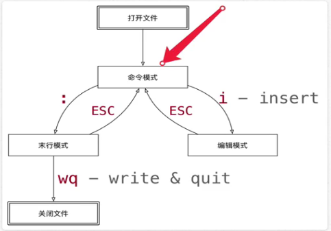

打开和新建文件
vi 文件名
如果文件存在，会直接打开该文件
如果文件不存在，会新建一个文件
打开文件并且定位行
vi 文件名 +行数
如果只有+，增直接定位到文件末尾
异常处理
如果vi异常退出，在磁盘上可能会保存 交换文件
按下字母d删除交换文件即可
三种工作模式
命令模式
打开文件首先进入命令模式，是使用vi的入口
通过命令对文件进行常规的编辑操作，例如：定位、翻页、复制、粘贴、删除
末行模式---执行保存、退出等操作
要退出vi返回到控制台，需要在末行模式下输入命令
末行模式是vi的出口
编辑模式
正常的编辑文字


常用命令
1.重复次数
在命令模式下。先输入一个数字，在跟上一个命令，可以让该命令重复执行指定次数
2.移动和选择
vi之所以快，关键在于 能够快速定位到要编辑的代码行
移动命令 能够和 编辑操作 命令 组合使用
3.编辑操作
删除、复制、粘贴、替换、缩排
4.撤销和重复
5.查找替换
6.编辑
移动（命令模式下）
h：左
j：下
k：上
l：右
编辑操作命令，能和移动命令结合在一起使用
行内移动
w：向后移动一个单词
b：向前移动一个单词
0：行首
^：行首，第一个不是空白字符的位置
$：行尾
行数移动
gg：文件顶部
G：文件末尾
数字gg：移动到数字对应行数
数字G：移动到数字对应行数
:数字：移动到数字对应行数
屏幕移动
ctrl + b：向上翻页
ctrl + f：向下翻页
H：屏幕顶部
M：屏幕中间
L：屏幕底部
移动（程序）
段落移动
vi中使用空行来区分段落
在程序开发时，通常一段功能相关的代码会写在一起--之间没有空行
{：上一段
}：下一段
括号切换
在程序世界中，()、[]、{}使用的频率很高，而且 都是成对出现的
%：括号匹配及切换
标记
·在开发时，某一块代码可能需要稍后处理，例如：编辑、查看
·此时先使用m增加一个标记，这样可以 在需要是快速地跳转回来 或者 执行其他编辑操作
·标记名称 可以是a~z或者A~Z之间的任意一个字母
·添加了标记的行如果被删除，标记同时被删除
·如果在其他行添加了相同名称的标记，之前添加的标记也会被替换掉
mx：添加标记x，x是a~z或者A~Z之间的任意一个字母
'x：直接定位到标记x所在位置
选中文本（可视模式）
· 学习复制命令前，应学会怎么样选中要复制的代码
·在vi中要选择文本，需要先使用visual命令切换到可视模式
·vi中提供了三种可视模式
·按ESC可以放弃选中，返回到命令模式
v：可视模式，从光标位置开始按照正常模式选择文本
V：可视行模式，选中光标经过的完整行
Ctrl + v：可视块模式，垂直方向选中文本
·可视模式下，可以和移动命令连用，例如：ggVG能够选中所有内容
V--->}(shift)
V--->gg--->V--->G
撤销和恢复撤销
u：撤销上次命令
Ctrl + r：恢复撤销命令
删除文本
x：删除光标所在字符，或者选中文字 5+x，删除5个
d（移动命令）：删除移动命令对应的内容 d+w删除一个单词，d+6+G删到第6行
dd：删除光标所在行，可以ndd复制多行 5+dd，删除5行
D：删除至行尾
如果使用 可视模式 已经选中了一段文本，那么无论使用d还是x，都可以删除选中文本
d0：从光标位置删除到一行的起始位置
d}：从光标位置删除到段落结尾
ndd：从光标位置向下连续删除n行
d'a：从光标所在行，删除到标记a之间的所有代码
复制、粘贴
vi中提供有一个被复制文本的缓冲区
复制命令会将选中的文字保存在缓冲区
删除命令删除的文字会被保存在缓冲区
在需要的位置，使用粘贴命令可以将缓冲区的文字插入到光标所在的位置
y（移动命令）：复制
yy：复制一行，可以nyy复制多行
p：粘贴 5+p
d、x类似于图形界面的剪切操作 --CTRL + X
vi中的文本缓冲区同样只有一个，如果后续做过复制、剪切操作，之前缓冲区中的内容会被替换掉
注：
vi中的文本缓冲区和系统的剪贴板不是同一个
所以在其他软件中使用CTRL+C复制的内容，不能在vi中通过p命令粘贴
可以在编辑模式下使用鼠标右键粘贴
替换
r：替换当前字符（命令模式）
R：替换当前行光标后的字符（替换模式）
·R命令可以进入替换模式，替换完成后，按下ESC可以回到命令模式
·替换命令的作用就是不用进入编辑模式，对文件进行轻量级的修改
缩排和重复执行
>>：向右增加缩进
<<：向左减少缩进
.：重复上次命令
·在可视模式下，缩进命令只需要使用一个<或者>
·在程序中，缩进通常用来表示代码的归属关系，前面空格越少，代码的级别越高
查找
常规查找
/str：查找str
·查找到指定内容后，使用Next查找下一个出现的位置
·n：查找下一个
·N：查找上一个
·如果不想看到高亮显示，可以随便查找一个文件中不存在的内容即可
单词快速匹配
*：向后查找当前光标所在单词
#：向前查找当前光标所在单词
查找并替换
·在vi中查找和替换命令需要在 末行模式 下执行
·格式 :%s///g
1)全局替换
·一次性替换文件中的 所有出现的旧文本
·命令格式如下：:%s/旧文本/新文本/g
2)可视区域替换
·先选中要替换文字的范围(可视模式选择文本)
·命令格式如下：:s/旧文本/新文本/g
3）确认替换
如果把末尾的g改成gc在替换的时候，会有提示！
:%s/旧文本/新文本/gc
1.y-替换
2.n-不替换
3.a-替换所有
4.q-退出替换
5.l-最后一个，并把光标移动到行首
6.^E-向下滚屏
7.^Y-向上滚屏
插入命令
进入编辑模式：
i：在当前字符前插入文本
I：在行首插入文本
a：在当前字符后添加文本
A：在行末添加文本
o：在当前行后面插入一空行
O：在当前行前面插入一空行

编辑命令演练
1.编辑命令和数字连用
1.命令模式下输入10
2.输入i进入编辑模式
3.输入想重复的内容
4.回到命令模式
则vi就会把2,3两步的操作重复10次，可以用.在重复执行
所以，在进入编辑模式之前，不要按数字
2.利用可视块给多行代码增加注释
1.移动到要添加注释的 第一行代码，按^来到行首
2.按CTRL+v进入可视块模式
3.使用j向下连续选中要添加的代码行
4.输入I进入编辑模式，并在行首插入
5.输入#也就是注释符号
6.按下ESC返回到命令模式，返回之后vi会在之前选中的每一行代码前插入#
分屏命令
可以同时编辑和查看多个文件
1.末行命令扩展
:e.：会打开内置的文件浏览器，浏览当前目录下的文件
如果想查看某个文件，光标停在文件上，按一下回车键
: e hello.py 打开hello.py文件（文件必须是保存过 的）
:n文件名：新建文件
:w文件名：另存为，但是仍然编辑当前文件，并不会切换文件
2.分屏命令
:sp[文件名] 横向增加分屏
:vsp[文件名] 纵向增加分屏
1）切换分屏窗口 (CTRL+w)
w：切换到下一个窗口
r：互换窗口
c：关闭当前窗口，但是不能关闭最后一个窗口
q：退出当前窗口，如果是最后一个窗口，则关闭vi
o：关闭其他窗口